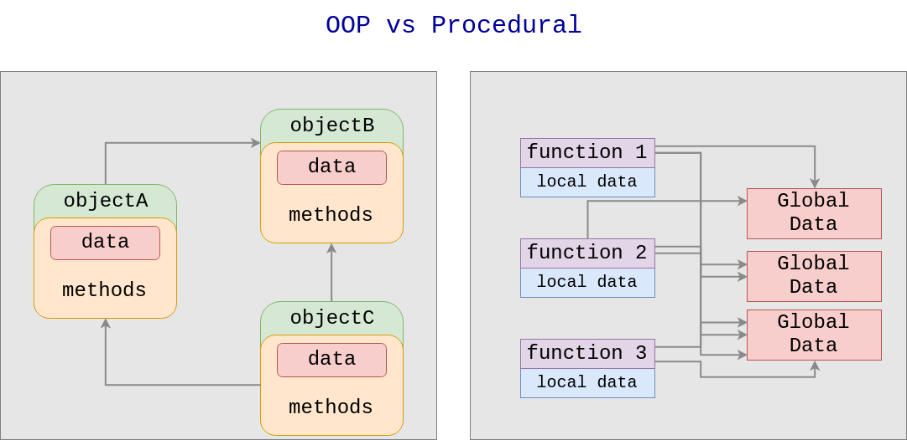

Keyboard shortcuts:
N/СпейсNext Slide
PPrevious Slide
OSlides Overview
ctrl+left clickZoom Element
If you want print version => add '
?print-pdf' at the end of slides URL (remove '#' fragment) and then print.
Like: https://wwwcourses.github.io/...CourseIntro.html?print-pdf
Python: classes and objects.
Created for

Iva E. Popova, 2024,

Object-oriented Programming Paradigm
Transitioning from Procedural to Object-Oriented Programming
- Procedural programming is a programming paradigm that organizes code into procedures (functions, implementing given task), separating the program's logic from its data structures.
- But in large-scale projects, such as Customer Relationship Management (CRM) systems, using the Procedural Paradigm leads to challenges:
- It becomes hard to define complex problems using only procedures or functions.
- Tracking which function affects which piece of data is tricky.
- Object-Orient Programming (OOP) is a paradigm that organizes software design around objects rather than functions and logic.
- Objects are self-contained, reusable components, encapsulating both data and the logic to manipulate that data.
- Offers a higher level of abstraction, making it easier to tackle real-world problems.
- Enables thinking in terms of objects that interact with each other, mirroring real-life interactions.
- Acts as a "black box" that performs specific operations, enhancing modularity and code reuse. This allows large teams to work on different parts of a system simultaneously.
OOP vs Procedural Paradigms
{kind=link}
OOP - Main Concepts
OOP - Main Concepts
Class and Objects
- Class
- A class is a blueprint, template, that defines and describes objects attributes (data) and behaviour(methods)
- Can be seen as a user-defined data type
- Object
- An instance of a class - an entity of given class, that can be used in a program
- Instances of same class have similar properties and behaviour

Inheritance
- A class can inherit attributes and methods from another base class, and at the same time to define its own.

Classes and Objects in Python
Classes and Objects in Python
Minimal Class definition
- The minimal class definition in Python looks like:
- Example:
- The class name typically follows the CapWords (Upper Camel Case)convention.
class ClassName:
pass
class Person:
pass
Object Creation
- The minimal syntax is:
- Objects created from the same
classhave sametype, but they are different entities:
object_name = ClassName()
# create objects of class Person:
pesho = Person()
maria = Person()
# let's check:
print( type(pesho) )
print( type(maria) )
# <class '__main__.Person'>
# <class '__main__.Person'>
class Person:
pass
maria = Person()
pesho = Person()
print( maria == pesho)
#False
The __init__() method
__init__() method
- The
__init__()method (called Class Constructor in other languages) is a special method which is called automatically when each new object is created. - The
__init__()method defines the action which will happens when a new object instance is created. - Usually, this actions include setting object attributes, as we want all instances from given class to have same attributes with different values.
- Syntax:
- Note, that you must define at least one parameter in the method.
- Example:
class ClassName:
def __init__(self):
pass
# class definition
class ClassA:
def __init__(self):
print("An object of ClassA is created!")
# objects creation:
obj1 = ClassA()
obj2 = ClassA()
# output:
# An object of ClassA is created!
# An object of ClassA is created!
About self parameter
selfrefers to the instance of the class and allows access to attributes and methods.selfwill take (automatically) a reference to the object being created.- You can name the parameter as you wish, but the convention is to name it
self
class ClassName:
def __init__(self, val1, val2):
self.atr1 = val1
self.atr2 = val2
Person Class Constructor Example
class Person:
def __init__(self, name, age):
# set object attributes values:
self.name = name
self.age = age
def greet(self):
print(f"Hi there! I'm {self.name}, {self.age} years old!")
maria = Person("Maria Popova", 25)
pesho = Person("Pesho", 27)
maria.greet()
pesho.greet()
# Hi there! I'm Maria Popova, 25 years old!
# Hi there! I'm Pesho, 27 years old!
Attributes
Attributes
Instance Attributes
- Instance Attributes are data that is stored within an object. They represent the properties (characteristics) of an object
- The term property (common in other OOP languages) is often used as synonymous to attribute.
- Attributes are accessed using the dot notation.
- Access attributes in class:
- Access attributes in object
class Person:
def __init__(self, name, age):
# set instance attributes
self.name = name
self.age = age
maria = Person('Maria', 23)
# access object attribute for writing:
maria.age = 24
# access object attribute for reading:
print(maria.age) # 24
Attributes as state of an object
- Instance attributes are variables used to store the data (state) of an object.
- Each object can have its own set of values for these attributes, distinguishing it from other objects of the same class.
class Person:
def __init__(self, name, age):
self.name = name
self.age = age
person1 = Person("Maria Popova", 25)
person2 = Person("Petar Ivanov", 34)
print(person1.name) # Maria Popova
print(person1.age) # 25
print(person2.name) # Petar Ivanov
print(person2.age) # 34
Class Attributes
- Class Attributes are defined outside any methods and are typically placed at the top, just under the class header.
- They are shared across all instances of the class.
- Their main use is for storing constants or default values that apply to all instances.
- Class attributes can be accessed using the class name or an instance of the class.
class Person:
name = "Anonymous"
age = 100
maria = Person()
petar = Person()
print(maria.name, maria.age) # Anonymous 100
print(petar.name, petar.age) # Anonymous 100
print(Person.name, Person.age) # Anonymous 100
Instance Attributes shadows Class Attributes
- If you change a class attribute value using the class name, it affects all instances. However, if you modify it using an instance, it affects only that instance.
class Person:
name = "Anonymous"
def __init__(self, name):
self.name = name
maria = Person("Maria Popova")
petar = Person("Petar Ivanov")
print(maria.name) # Maria Popova
print(petar.name) # Petar Ivanov
print(Person.name) # Anonymous
Class Attributes - use case
- Class attributes are ideal for defining constants or default values that are common to all instances of a class.
class Person:
count = 0
def __init__(self, name):
self.name = name
Person.count += 1
maria = Person("Maria Popova")
petar = Person("Petar Ivanov")
ivan = Person("Ivan Petrov")
print(Person.count) # 3
Attributes - internal
- Attributes are stored internally in a dictionary structure
- Each object has associated dictionary attribute, named
__dict__, which store an object's (writeable) attributes
class Person:
count = 0
def __init__(self, name):
self.name = name
Person.count += 1
maria = Person("Maria Popova")
print(maria.__dict__) # {'name': 'Maria Popova'}
Methods
Methods
Overview
- Methods are functions defined inside a class that describe the behaviors and actions of an object created from the class.
- There are several types of methods in Python, each serving a distinct purpose.
- The most used methods are the Instance Methods.
Instance Methods
Instance Methods
- Instance methods are the most commonly used type of methods in Python OOP. They operate on an instance of the class and can access and modify the state of the object (instance attributes).
- Syntax
- Note, that the first parameter is always self, which refers to the instance calling the method..
- You can name the parameter as you wish (it is just a function parameter), but the convention is to name it
self - Example
class ClassName:
def method_name(self):
pass
class Person:
def __init__(self, name, age):
self.name = name
self.age = age
# define instance method
def greet(self):
print(f"Hello, my name is {self.name} and I am {self.age} years old.")
maria = Person('Maria', 23)
# call greet() method on maria. python will send the maria object reference to the self parameter.
maria.greet()
# Hello, my name is Maria and I am 23 years old.
more on self
- When a method is invoked from an object, Python automatically passes the object reference to the first parameter in the method definition.
class A:
def method1(self, obj):
print(self)
print(obj)
print(self==obj)
a = A()
# lets check if a == self
a.method1(a)
# <__main__.A object at 0x7fa44994df40>
# <__main__.A object at 0x7fa44994df40>
# True
Class Methods
- Class methods affect the class as a whole, not just individual instances. They can modify the class state that applies across all instances.
- Class methods are defined with the
@classmethoddecorator. - The first parameter is
cls, which reference to the class itself.
class Person:
count = 0
@classmethod
def increment_count(cls):
# do additional actions or checks...
cls.count += 1
def __init__(self, name):
self.name = name
Person.increment_count()
maria = Person("Maria Popova")
petar = Person("Petar Ivanov")
ivan = Person("Ivan Petrov")
print(Person.count)
Static Methods
Overview
- Static methods do not operate on the instance or the class. They are similar to regular functions but are included in the class because they have some logical connection with it.
- Static methods are defined with the @staticmethod decorator.
- Static methods do not take a self or cls parameter and cannot modify instance or class state.
- Static methods in Python are used when you need a function that is logically associated with a class but does not need to access or modify the class's state or the instance's state.
class Car:
def __init__(self, make, model):
self.make = make
self.model = model
@staticmethod
def calculate_fuel_efficiency(distance, fuel_used):
return distance / fuel_used
Magic (dunder) methods. Operator Overloading
Magic (dunder) methods
Overview
- Besides the
__init__()method in Python, there are many other predefined special methods, also called magic (or dunder) methods, which have the same notation form: - The double underscore is often called dunder, thus the methods - dunder methods
- Reference: Basic customization @python.org
__magic__()
__str__ method
- The
__str__method is meant to return a human-readable string representation of an object. - The
__str__()method which will be invoked, when you call the str(), format() or print() functions of a class instance - The return value must be a string!
class Person:
def __init__(self, name, age):
self.name = name
self.age = age
def __str__(self):
return "name = {}\nage = {}\n".format(self.name, self.age)
maria = Person("Maria Popova", 25)
print(maria)
# name = Maria Popova
# age = 25
Operator overloading
Overview
- Operator overloading in Python refers to the ability of a class to redefine standard operator behavior for its instances.
- This means you can use Python's built-in operators (like +, -, *, etc.) with objects of your custom classes in a way that is intuitive and specific to your class's context
class Point:
def __init__(self, x, y):
self.x = x
self.y = y
def __str__(self):
return f"x = {self.x}, y = {self.y}"
def __add__(self, other):
return Point(self.x + other.x, self.y + other.y)
p1 = Point(1, 2)
p2 = Point(3, 4)
p3 = p1 + p2 # Uses __add__
print(p3)
OOP Basics: Examples
OOP Basics: Examples
Employee Class
class Employee:
"""Represents an employee with a name, ID, salary, and department."""
def __init__(self, name, emp_id, salary, department):
"""Initializes an Employee object with the given attributes."""
self.name = name
self.emp_id = emp_id
self.salary = salary
self.department = department
def calculate_salary(self, hours_worked=40):
"""Calculates the employee's salary, including overtime if applicable."""
overtime = 0
if hours_worked > 40:
overtime = hours_worked - 40
overtime_pay = overtime * (self.salary / 2080) # Assuming 52 weeks per year, 40 hours per week
self.salary += overtime_pay
def __str__(self):
"""Returns a formatted string containing the employee's details. Called automatically by print()"""
return f"Name: {self.name}\nID: {self.emp_id}\nSalary: {self.salary:.2f}\nDepartment: {self.department}"
# Example usage:
employee1 = Employee("Ivan Ivanov", 12345, 50000, "Engineering")
employee1.calculate_salary(45) # Calculate salary with overtime
print(employee1)
# Name: Ivan Ivanov
# ID: 12345
# Salary: 50120.19
# Department: Engineering
Find employee with the highest salary
class Employee:
"""Represents an employee with a name, ID, salary, and department."""
def __init__(self, name, emp_id, salary, department):
"""Initializes an Employee object with the given attributes."""
self.name = name
self.emp_id = emp_id
self.salary = salary
self.department = department
# Create 5 employee objects with different salaries
employees = [
Employee("Ivan Petrov", 1234567890, 50000, "Engineering"),
Employee("Maria Ivanova", 9876543210, 65000, "Marketing"),
Employee("Mihail Georgiev", 2345678901, 48000, "Sales"),
Employee("Alisa Stoyanova", 3456789012, 52000, "Human Resources"),
Employee("Bogomil Nikolov", 5678901234, 70000, "Finance"),
]
# Find the employee with the highest salary
highest_earner = None
highest_salary = 0
for employee in employees:
if employee.salary > highest_salary:
highest_earner = employee
highest_salary = employee.salary
# Print the details of the employee with the highest salary
print(f"Employee with the highest salary:")
print(f"Name: {highest_earner.name}")
print(f"ID: {highest_earner.emp_id}")
print(f"Salary: ${highest_salary}")
print(f"Department: {highest_earner.department}")
# Employee with the highest salary:
# Name: Bogomil Nikolov
# ID: 5678901234
# Salary: $70000
# Department: Finance
Car Class
class Car:
"""Represents a car with specific attributes and functionalities."""
def __init__(self, manufacturer, model, year, color, mileage):
"""Initializes a Car object with the given attributes."""
self.manufacturer = manufacturer
self.model = model
self.year = year
self.color = color
self.mileage = mileage
def accelerate(self, speed_increase):
"""Simulates accelerating the car by increasing its speed."""
# Add safety checks and speed limits here
print(f"Car is accelerating, speed increased by {speed_increase} mph.")
def brake(self, speed_decrease):
"""Simulates braking the car by decreasing its speed."""
# Add safety checks and minimum speed requirement here
print(f"Car is braking, speed decreased by {speed_decrease} mph.")
def __str__(self):
"""Returns a formatted string of the car's details. Called automatically by print()"""
return f"Manufacturer: {self.manufacturer}\nModel: {self.model}\nYear: {self.year}\nColor: {self.color}\nMileage: {self.mileage}"
# Example usage:
my_car = Car("Toyota", "Camry", 2020, "Silver", 30000)
my_car.accelerate(20)
my_car.brake(10)
print(my_car)
# Car is accelerating, speed increased by 20 mph.
# Car is braking, speed decreased by 10 mph.
# Manufacturer: Toyota
# Model: Camry
# Year: 2020
# Color: Silver
# Mileage: 30000
Inheritance
Inheritance
Overview
- Inheritance is a fundamental concept in object-oriented programming (OOP) that allows a new class to inherit properties and methods from an existing class
- The mechanism of Inheritance allows programmers to create new (derived) class that is built upon existing (base) class, extending (if needed) its behaviour.
- The primary benefit of inheritance is code reusability.
Inheritance in Python
- In Python, inheritance is implemented by passing the parent class as a parameter to the child class.
- Example
class BaseClass:
pass
class DerivedClass(BaseClass):
pass
class Person():
def __init__(self, name, age):
self.name = name
self.age = age
def greet(self):
print(f"Hi, I'm {self.name} and I'm {self.age} years old. ")
class Employee(Person):
pass
maria = Employee("Maria", 20)
maria.greet()
Inheritance mechanism
- If a requested attribute/method is not found in the child class, the search proceeds to look in the base class.
- This rule is applied recursively if the base class itself is derived from some other class.
- Derived classes may override methods of their base classes
Method overriding
- Derived classes may override methods of their base classes.
class Person():
def __init__(self, name, age):
self.name = name
self.age = age
def greet(self):
print(f"Hi, I'm {self.name} and I'm {self.age} years old. ")
class Employee(Person):
def greet(self):
print(f"Hi, I'm the employee {self.name}, {self.age} years old. ")
maria = Person("Maria", 20)
petar = Employee('Petar', 34)
maria.greet()
petar.greet()
# Hi, I'm Maria and I'm 20 years old.
# Hi, I'm the employee Petar, 34 years old.
super() access to base methods
- From a derived (child) class we can call methods, defined in the base (parent) class, using
super()
class Person():
def __init__(self, name, age):
self.name = name
self.age = age
def greet(self):
print(f"Hi, I'm {self.name} and I'm {self.age} years old. ")
class Employee(Person):
def __init__(self, name, age, salary):
super().__init__(name, age) # call Person __init__
self.salary = salary
def greet(self):
super().greet() # # call Person greet_
print(f'My salary is {self.salary}')
maria = Employee("Maria", 20, 7300)
maria.greet()
Homework
Homework
Simple Library System
- Refactor the Simple Library System Task to use classes.
More OOP Tasks
- Tasks are given in next file: OOP_tasks.py
- Just download it and write your solution in it.